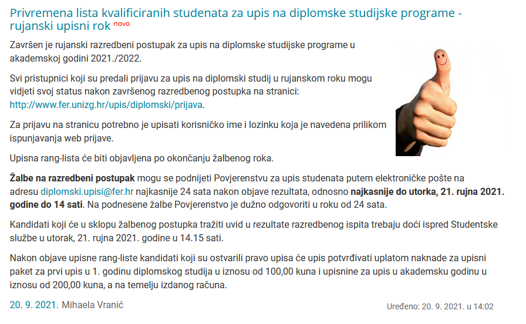

Civicix Evo screenshot 🙂

Imaš pristup aplikaciji, a ne ostalim obavijestima studentima?
I ovo je iz još jedne obavijesti od 16.9. :
Ukupno 18 prijavljenih kandidata imalo je obvezu pristupiti razredbenom ispitu za upis diplomskog studija. Razredbenom ispitu pristupilo je njih ukupno 13 od čega je 12 kandidata ostvarilo bodovni prag. Kandidati su o rezultatu na ispitu obaviješteni putem e-pošte na adresu koju su naveli prilikom postupka prijave na natječaj za upis diplomskog studija.
U petak, 17. rujna 2021. godine bit će objavljena privremena lista kvalificiranih kandidata i otvoren žalbeni postupak.
Konačni rezultati razredbenog postupka bit će objavljeni po okončanju žalbenog postupka.
Ovo za petak mislim da su kasnili, to su tek danas s ovom objavom valjda. Mislim da si good 2 go.